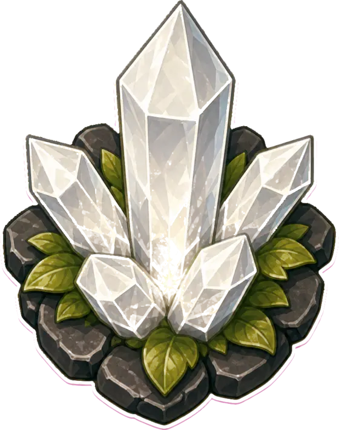

Юл буенча барган чылбыр
Төсле шарлар чылбыры ийрелгән юл буенча бара һәм матчлардан соң арадашларны ябып бара. Матч өчен өч яки күбрәк шар кирәк.
Лемур патшасы джунглини саклый.
Яркый джунглидә шар атучы. Төзәгез, өч яки күбрәк туры китерегез, чылбыр реакцияләрен кузгатыгыз һәм махсус сәләтләр белән чылбырны очына җиткермәстән туктатыгыз.
Бер сынау дәрәҗәсендә атып туры китерү циклының тулы варианты бар. Кампания, дәрәҗә картасы һәм босслар дизайн документында, әле төзелмәгән.

Нишанлау өчен күрсәтегез, агымдагы шарны атуга клик яки тап ясагыз. Уң клик яки резервны тап, аны киләсе белән алыштырыгыз.
Бер төстәге өч яки күбрәк шар төшә. Тишек ябылса һәм ике очы яңа туры килү бирсә, чылбыр реакциясе бара.
Махсус сәләтләр һәм тактадагы объектлар чылбыр юлның азагына җитмичә, дәрәҗә максатына ирешергә ярдәм итә.
Төсле шарлар чылбыры ийрелгән юл буенча бара һәм матчлардан соң арадашларны ябып бара. Матч өчен өч яки күбрәк шар кирәк.
Wildcard (универсаль), bomb (бомба), rewind (кире кайту), fire (ут), lightning (яшен), roots (тамырлар), freeze (туңдыру), water (су), aim (нишан), stone pierce (таш үтү) һәм double shot (ике атыш) уен кагыйдәләрендә эшли, һәрберсенең үз эмблемасы бар.
Кыр бомбалары һәм төс кристаллары тактада тора һәм сугылганда реакция бирә.
Дәрәҗә чылбырны чистартуны, идән объектларын активлаштыруны, упай яки максатлы каскадка ирешүне сорарга мөмкин.
Таҗлы лемурның уен вакытында реакция позалары бар.
Пауза экраны эффектлар көнлеген, музыка көнлеген һәм төзәү күрсәтмәсе көйләүен тәкъдим итә.
Чыгу датасы әлегә юк. Болар проект максатлары, вәгъдәләр түгел.
Unity проектыннан сәнгать материаллары, уен кадрлары түгел.




Яркый джунглидә Зума стилендәге шар атучы. Таҗлы лемур патшасы хәрәкәттәге чылбырга төсле шарлар ата. Сез өч яки күбрәк туры китерәсез һәм аны туктатыр өчен махсус сәләтләр кулланасыз.
Әле түгел. Lyamur - бер сынау дәрәҗәсе булган башлангыч прототип, җәмәгать версиясе һәм чыгу датасы юк. Дизайн документы мобиль һәм PC өчен.
Lyamur - WillowinWorlds тарафыннан ясалган, бәйсез уен студиясе (аның төп уеннар). Бу биттәге иҗтимагый каналларда WillowinWorlds'ны күзәтегез, яки электрон почта willowinworlds@gmail.com Lyamur турындагы яңартуларны сорау өчен.
Тавыш бирү студиянең каналларында ачылачак. Катнашу өчен WillowinWorlds'ны күзәтегез.